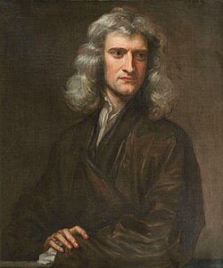

1642-1727
Isaac Newton

Portrait: Godfrey Kneller, Public domain, Wikimedia Commons.
Events (6)
- 1609Kepler's laws of planetary motion
developer · Astronomy & trigonometry
- 1656Wallis: interpolation and infinite products
developer · Analysis
- 1684The calculus (differential and integral calculus)
originator · Analysis
- 1685Newton: infinite series and binomial theorem
developer · Analysis
- 1687Newton's Principia
developer · Mathematical physics
- 1690Differential equations from calculus and mechanics
originator · Differential equations